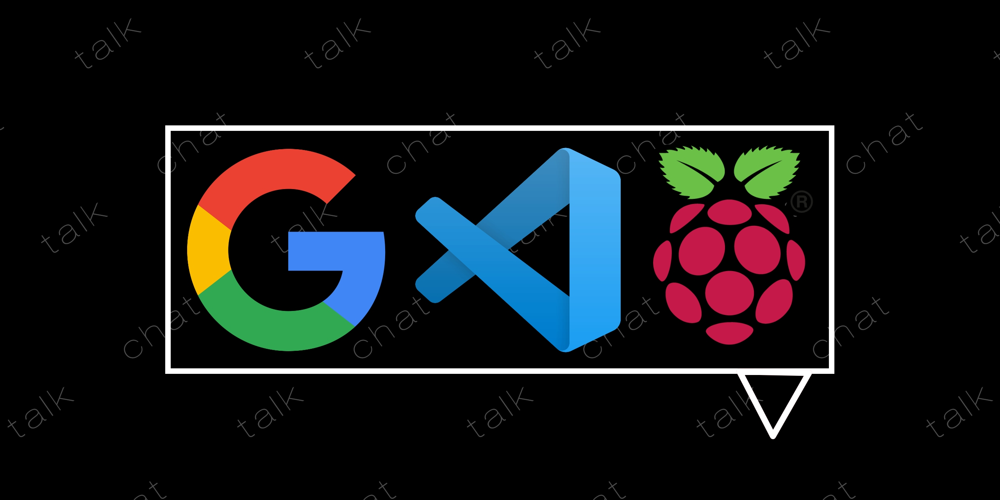
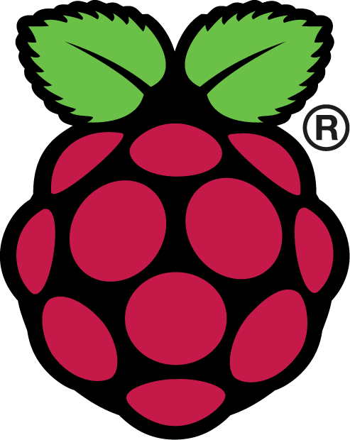

Google
Google sera usado para pesquisa de varias coisas durante
o desenvolvimento do TalkChat.

Code Oss>
Além disso, para escrever, revisar e corrigir os códigos em
HTML, CSS e JS
será utilizado o Code OSS, uma versão do Visual Studio Code para Raspberry Pi.

Raspberry PI
Além dos PCs da escola, a maior parte dos codigos etc
serão feitos em casa, usando um Raspberry PI 3B
 PAGINA ATUAL - METODOLOGIA
PAGINA ATUAL - METODOLOGIA